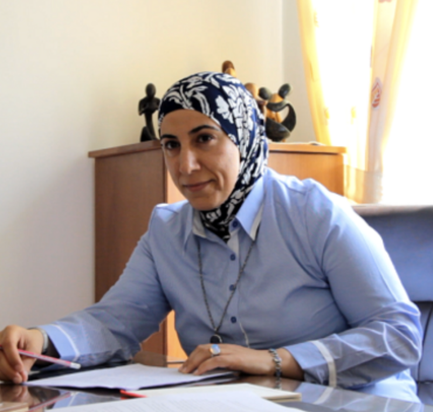
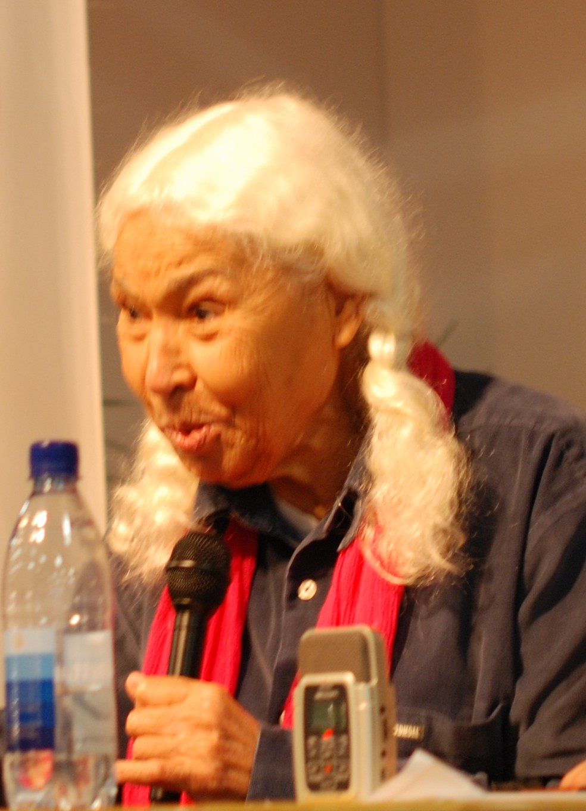
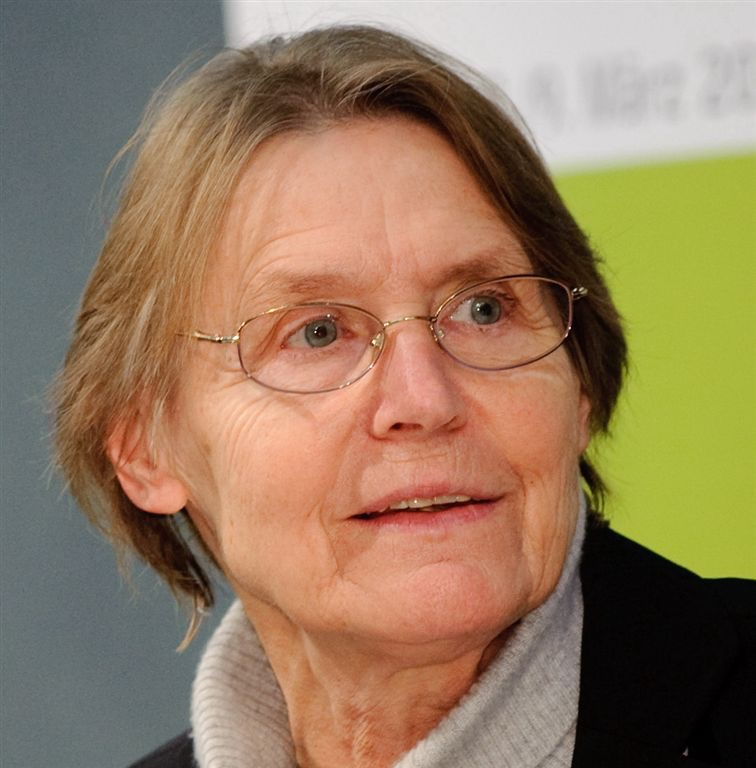
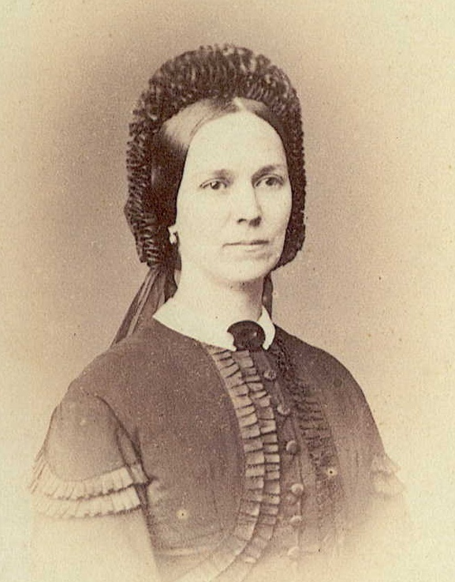
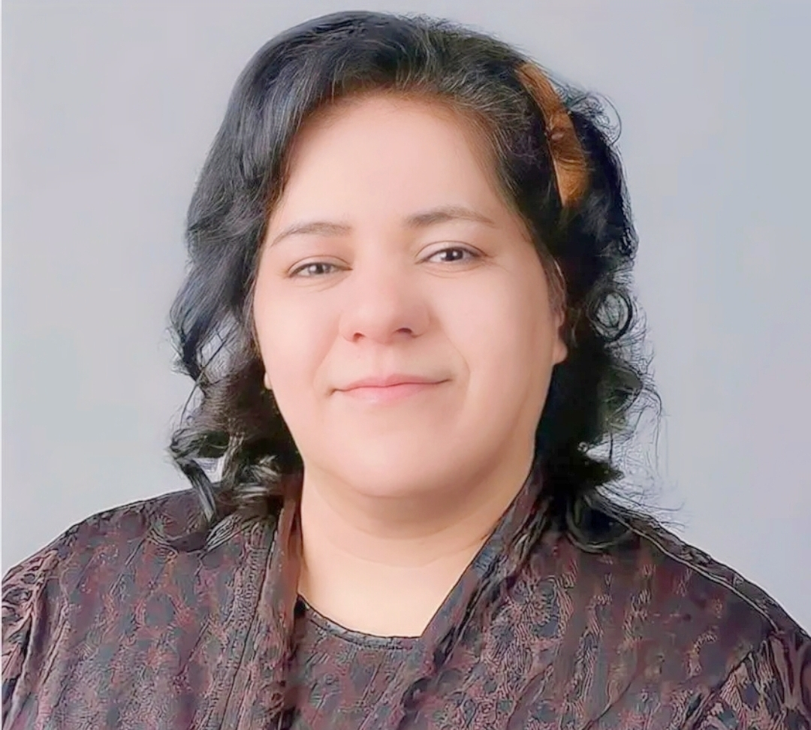
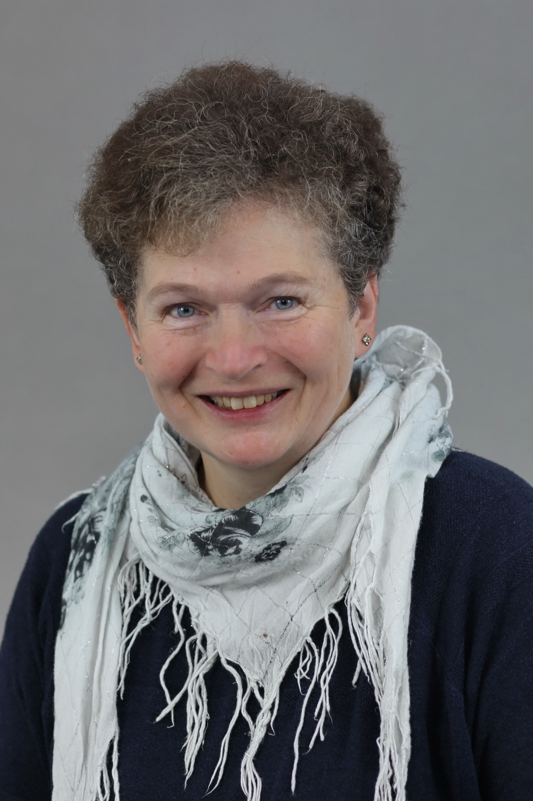

Auteur·rice·s
Samah Jabr
Samah Jabr, née en 1976 à Jérusalem-Est, est psychiatre et écrivaine. Elle est l'auteur de Derrière les fronts, paru en France en 2017 chez Premiers Matins de Novembre et Hybrid Pulse. Au regard de ses observations cliniques et d'un discours actualisé de Frantz Fanon, elle décrit la vie quotidienne en Palestine occupée et nous invite à réfléchir sur la santé mentale, le colonialisme et les droits humains. [Image: Alexandra Dols]
Nawal El Saadawi
Nawal El Saadawi est une écrivaine et militante des droits de l'homme égyptienne. À l'origine médecin et psychiatre, elle s'est intéressée dans son œuvre notamment à l'excision des femmes et plus généralement au rôle de la femme dans l'islam et dans la société égyptienne. Son livre al-Mar'a wa-l-ǧins ("La femme et le sexe"), publié en 1972, a été interdit en Égypte et a entraîné sa destitution de son poste de directrice de l'éducation sanitaire au ministère de la Santé égyptien. Nawaal El Saadawi a publié de nombreux romans, nouvelles, pièces de théâtre, mémoires, essais et écrits politiques. Elle est décédée en mars 2021 à l'âge de 89 ans au Caire. [Image: Bengt Oberger]
Helga Baumgarten
Helga Baumgarten (née en 1947) est une politologue allemande et une experte du Proche-Orient. Elle a obtenu son doctorat à l'Université libre de Berlin, enseigne à l'Université de Birzeit en Cisjordanie et mène des recherches sur le conflit israélo-palestinien, le rôle des mouvements palestiniens, les dynamiques de l'occupation, et l'histoire politique du Proche-Orient. Elle a publié de nombreux ouvrages sur ces sujets et est connue pour ses analyses approfondies et son engagement académique. [Image : Stephan Röhl]
André Léo
André Léo (née en 1824 sous le nom de Victoire Léodile Béra) était une écrivaine, journaliste et militante politique française. Elle a écrit de nombreux romans, nouvelles, articles et textes politiques. Dans son œuvre, l'auteure féministe abordait des thèmes sociaux tels que l'émancipation des femmes, les conditions de travail dignes et la séparation de l'Église et de l'État (sur ce dernier sujet, voir "Coupons la corde !", publié en 2022 chez Gamila). André Léo a passé une grande partie de sa vie en Suisse romande et au Tessin, entretenant des relations avec des personnalités politiques et littéraires telles que Victor Hugo ou Mikhaïl Bakounine, dont elle a rejoint l'"Alliance internationale de la démocratie socialiste" en 1871. En 1881, Léo est retournée en France, où elle a continué à travailler en tant qu'écrivaine et à rester politiquement active au cours des deux décennies suivantes. Elle est décédée en 1900 à l'âge de 75 ans dans son appartement à Paris.
Traducteur·rice·s
Doaa Elalfy
Doaa Elalfy vient de Mansoura en Égypte. Après avoir obtenu son diplôme en pharmacologie, elle a d'abord travaillé en tant que pharmacienne, puis en tant qu'inspectrice pharmaceutique, s'engageant également en faveur des femmes défavorisées. Dans ce contexte, elle a été confrontée à plusieurs reprises à l'excision féminine. Après des études en histoire ancienne, Doaa Elalfy prépare actuellement sa thèse sur l'histoire des formations médicales dans l'Égypte gréco-romaine.
Sophie Haesen
Depuis un très jeune âge, Sophie Haesen voulait traduire des livres et voyager. Elle a étudié la romanistique, la médecine, les sciences du Moyen-Orient et l'histoire, et a obtenu un doctorat en éthique médicale. En plus de son travail familial, elle a travaillé dans divers domaines et garde un grand intérêt pour une variété de sujets jusqu'à aujourd'hui. Ses voyages sur tous les continents ont également été marquants.
Graphistes
Enso Aellig
Enso Aellig (*1995) vit à Neuchâtel, travaille en tant que graphiste indépendant et maquettiste pour Gamila. Il prend en charge toutes les tâches de conception graphique pour l'éditeur, ainsi que certaines activités de rédaction et de relecture.